Type: Community Market in downtown Seville, Spain.
The Spring 2024 studio concentrated on the revitalization of an aban- doned site located near downtown Seville. The project aimed to transform the neglected area into a vibrant community space that harmonizes with Seville’s unique climate, rich cultural heritage, and the specific needs of its residents. By integrating sustainable design principles and respecting the local architectural context, the studio sought to create a space that would foster connection and enhance community life.
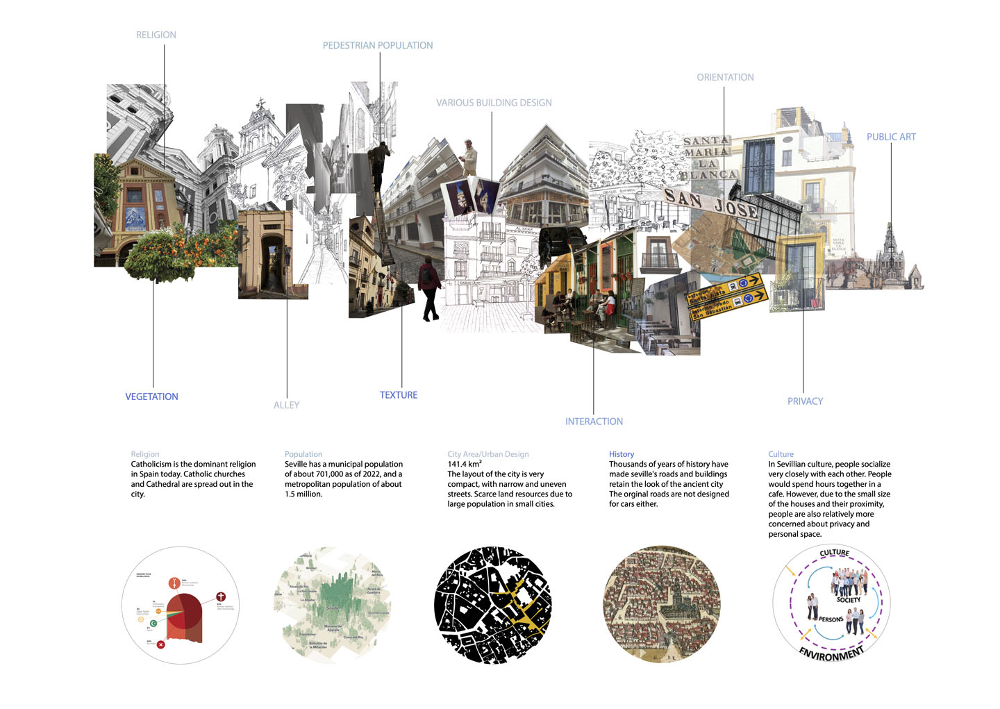
Seville Street College

Seville Street Analysis
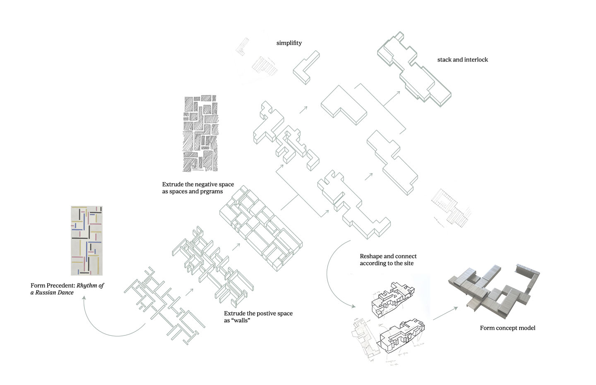Form Transformation Diagram
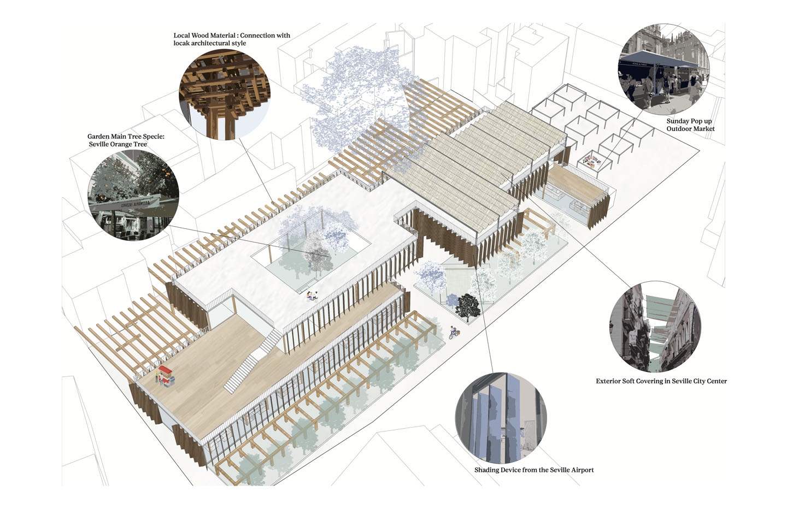Why Don't We Bring Street Into Buildings?
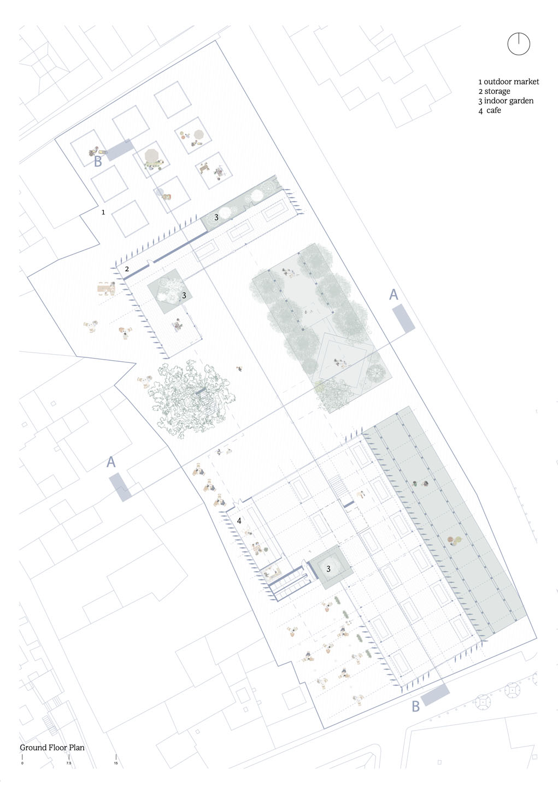Ground Floor Plan
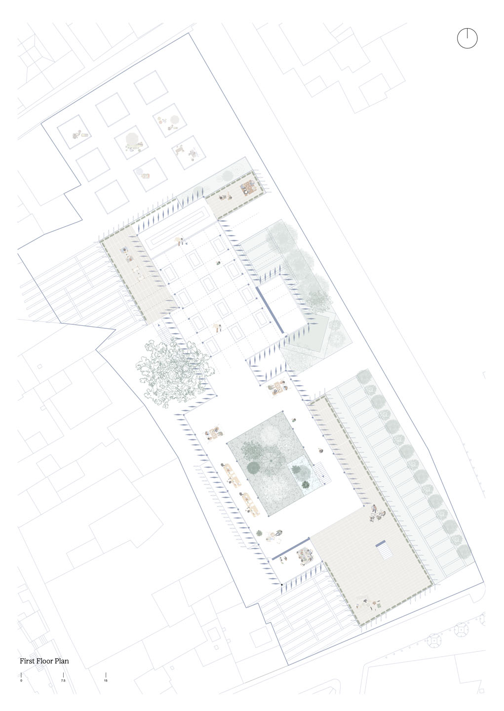First Floor Plan

Second Floor Plan
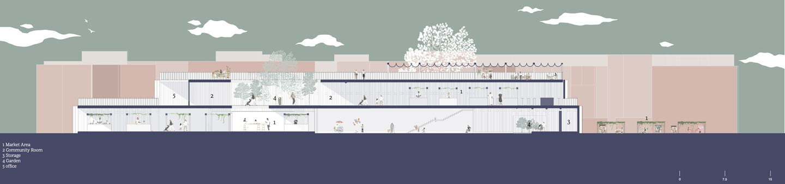Section A
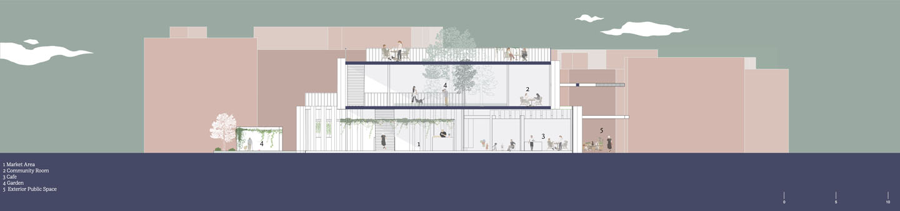Section B
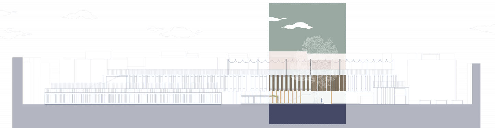Site Section A
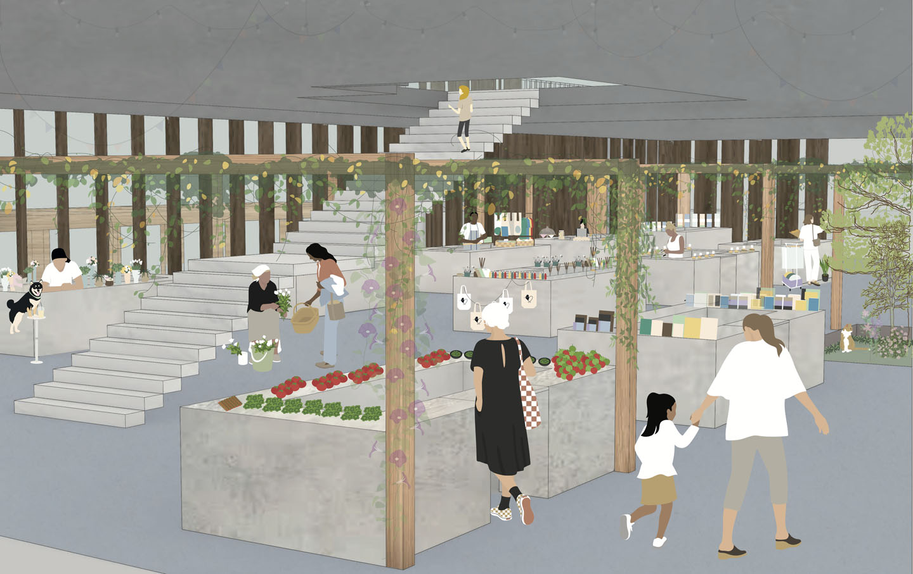Interior View
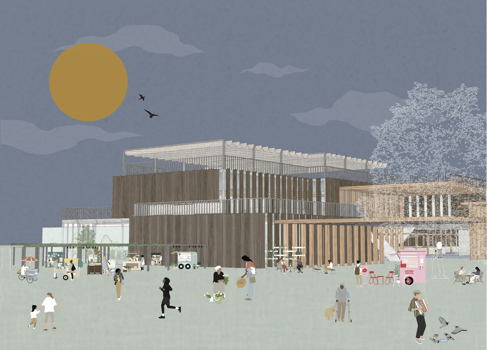Exterior View
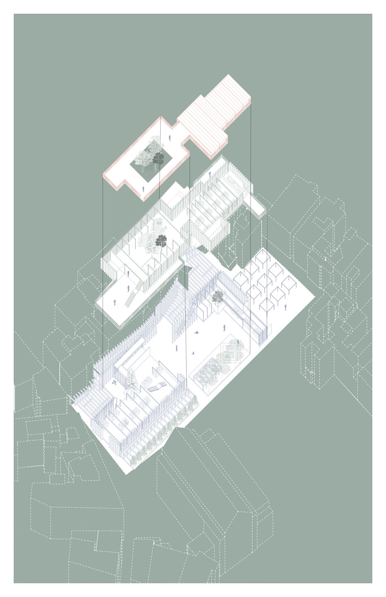Isomertic/Exploded View
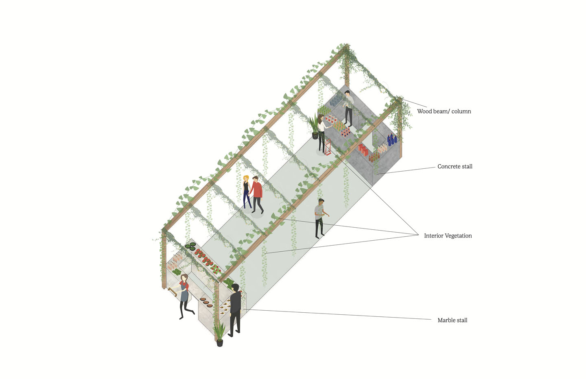Stall Diagram